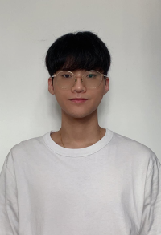

Personal Information
Education
Work Experience
Extracurricular Activities
Awards
IT Skills and Language
Native Cantonese, Fluent English, Fluent Mandarin, Fluent Taiwanese
MS Office (Excel/Word/PowerPoint)
Photoshop; Clip Studio; Blender; Premiere pro; Python; java
About me

As a financial analysis student, I learned a lot in school,
such as stock market operation, accounting, marketing technical analysis,
etc.
In addition, I worked in Tricor (A financial company) for two years
of experience, where I learned how to communicate with stockholders and hold
a shareholders meeting.
On the other, I enjoy learning different things;
for example, I am learning to use AI (Chatgpt) to write programs nowadays.